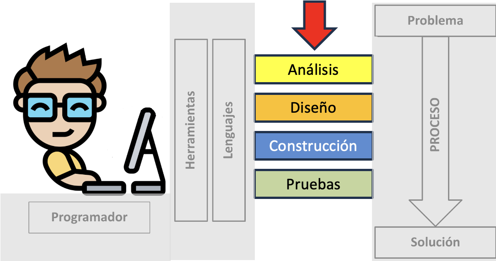
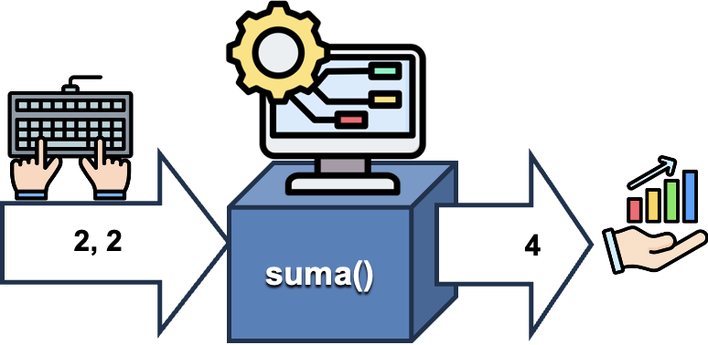
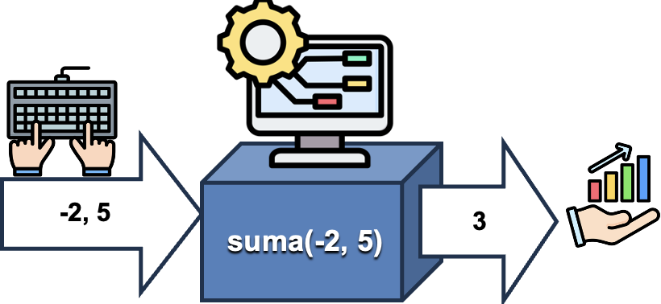

<!DOCTYPE html>
<html lang="en">
  <head>
    <meta charset="utf-8" />
    <meta name="viewport" content="width=device-width, initial-scale=1.0, maximum-scale=1.0, user-scalable=no" />

    <title></title>
    <link rel="stylesheet" href="dist/reveal.css" />
    <link rel="stylesheet" href="dist/theme/iph.css" id="theme" />
    <link rel="stylesheet" href="plugin/highlight/spyder.css" />
	<link rel="stylesheet" href="css/layout.css" />
	<link rel="stylesheet" href="plugin/customcontrols/style.css">


    <script defer src="dist/fontawesome/all.min.js"></script>

	<script type="text/javascript">
		var forgetPop = true;
		function onPopState(event) {
			if(forgetPop){
				forgetPop = false;
			} else {
				parent.postMessage(event.target.location.href, "app://obsidian.md");
			}
        }
		window.onpopstate = onPopState;
		window.onmessage = event => {
			if(event.data == "reload"){
				window.document.location.reload();
			}
			forgetPop = true;
		}

		function fitElements(){
			const itemsToFit = document.getElementsByClassName('fitText');
			for (const item in itemsToFit) {
				if (Object.hasOwnProperty.call(itemsToFit, item)) {
					var element = itemsToFit[item];
					fitElement(element,1, 1000);
					element.classList.remove('fitText');
				}
			}
		}

		function fitElement(element, start, end){

			let size = (end + start) / 2;
			element.style.fontSize = `${size}px`;

			if(Math.abs(start - end) < 1){
				while(element.scrollHeight > element.offsetHeight){
					size--;
					element.style.fontSize = `${size}px`;
				}
				return;
			}

			if(element.scrollHeight > element.offsetHeight){
				fitElement(element, start, size);
			} else {
				fitElement(element, size, end);
			}		
		}


		document.onreadystatechange = () => {
			fitElements();
			if (document.readyState === 'complete') {
				if (window.location.href.indexOf("?export") != -1){
					parent.postMessage(event.target.location.href, "app://obsidian.md");
				}
				if (window.location.href.indexOf("print-pdf") != -1){
					let stateCheck = setInterval(() => {
						clearInterval(stateCheck);
						window.print();
					}, 250);
				}
			}
	};


        </script>
  </head>
  <body>
    <div class="reveal">
      <div class="slides"><section  data-markdown><script type="text/template"><!-- .slide: class="has-light-background drop" data-background-color="#f8f8f8" -->
<div class="" style="position: absolute; left: 0px; top: 0px; height: 700px; width: 960px; min-height: 700px; display: flex; flex-direction: column; align-items: center; justify-content: center" absolute="true">

### <i class="fas fa-award"></i> IP Honores

 ####  *Metodología*

[Eduardo Rosales](mailto:ee.rosales24@uniandes.edu.co)

Departamento de Ingeniería de Sistemas y Computación

Universidad de los Andes
</div></script></section><section  data-markdown><script type="text/template"><!-- .slide: class="has-light-background drop" data-background-color="#f8f8f8" -->
<div class="" style="position: absolute; left: 0px; top: 0px; height: 700px; width: 960px; min-height: 700px; display: flex; flex-direction: column; align-items: center; justify-content: center" absolute="true">

### Metodología (1/7)

- En IP Honores se aplica una versión resumida de la
  - Metodología de desarrollo de software:


</div></script></section><section  data-markdown><script type="text/template"><!-- .slide: class="has-light-background drop" data-background-color="#f8f8f8" -->
<div class="" style="position: absolute; left: 0px; top: 0px; height: 700px; width: 960px; min-height: 700px; display: flex; flex-direction: column; align-items: center; justify-content: center" absolute="true">

### Metodología (2/7)

- **El orden importa**
- Analogía: 
	- Construir un edificio
		- ❌ Luego, hacer su diseño
	
<br>


<!-- .element: style="width: 20%; height: 25%" -->
</div></script></section><section  data-markdown><script type="text/template"><!-- .slide: class="has-light-background drop" data-background-color="#f8f8f8" -->
<div class="" style="position: absolute; left: 0px; top: 0px; height: 700px; width: 960px; min-height: 700px; display: flex; flex-direction: column; align-items: center; justify-content: center" absolute="true">

### Metodología (3/7)

- **Análisis**:
	1.  Identificar y especificar el problema
	2.  Identificar restricciones
	3.  Documentar
</div></script></section><section  data-markdown><script type="text/template"><!-- .slide: class="has-light-background drop" data-background-color="#f8f8f8" -->
<div class="" style="position: absolute; left: 0px; top: 0px; height: 700px; width: 960px; min-height: 700px; display: flex; flex-direction: column; align-items: center; justify-content: center" absolute="true">

### Metodología (4/7)

- **Diseño**:
	 1. Formular ejemplos
		- Casos significativos y no redundantes
	 2. Diseñar el algoritmo
	 3. Diseñar y documentar casos de prueba
</div></script></section><section  data-markdown><script type="text/template"><!-- .slide: class="has-light-background drop" data-background-color="#f8f8f8" -->
<div class="" style="position: absolute; left: 0px; top: 0px; height: 700px; width: 960px; min-height: 700px; display: flex; flex-direction: column; align-items: center; justify-content: center" absolute="true">

### Metodología (5/7)

- **Construcción**:
	- Codificar/implementar el diseño usando:
		- Documentación
        - Convenciones
        - Buenas prácticas de programación
</div></script></section><section  data-markdown><script type="text/template"><!-- .slide: class="has-light-background drop" data-background-color="#f8f8f8" -->
<div class="" style="position: absolute; left: 0px; top: 0px; height: 700px; width: 960px; min-height: 700px; display: flex; flex-direction: column; align-items: center; justify-content: center" absolute="true">

### Metodología (6/7)

- **Pruebas**:
	1. Verificar si el resultado obtenido es el esperado
	2. Depurar:
    	- Corregir errores
	    	- Pulir/mejorar/optimizar
		    	- La solución
	3. Pulir/complementar/corregir 
		- Los casos de prueba
</div></script></section><section  data-markdown><script type="text/template"><!-- .slide: class="has-light-background drop" data-background-color="#f8f8f8" -->
<div class="" style="position: absolute; left: 0px; top: 0px; height: 700px; width: 960px; min-height: 700px; display: flex; flex-direction: column; align-items: center; justify-content: center" absolute="true">

### Metodología (7/7)

- Aplicar **paso a paso** la metodología
	- Permite solucionar un problema
		- A través de la programación


</div></script></section><section  data-markdown><script type="text/template"><!-- .slide: class="has-light-background drop" data-background-color="#f8f8f8" -->
<div class="" style="position: absolute; left: 0px; top: 0px; height: 700px; width: 960px; min-height: 700px; display: flex; flex-direction: column; align-items: center; justify-content: center" absolute="true">

# Practiquemos la metodología del curso
</div></script></section><section  data-markdown><script type="text/template"><!-- .slide: class="has-light-background drop" data-background-color="#f8f8f8" -->
<div class="" style="position: absolute; left: 0px; top: 0px; height: 700px; width: 960px; min-height: 700px; display: flex; flex-direction: column; align-items: center; justify-content: center" absolute="true">

### El problema

- Se requiere calcular la suma de dos números enteros


</div></script></section><section  data-markdown><script type="text/template"><!-- .slide: class="has-light-background drop" data-background-color="#f8f8f8" -->
<div class="" style="position: absolute; left: 0px; top: 0px; height: 700px; width: 960px; min-height: 700px; display: flex; flex-direction: column; align-items: center; justify-content: center" absolute="true">

### Metodología

- Usemos la metodología del curso:

<br>


<!-- .element: style="width: 19%; height: 25%" -->
</div></script></section><section  data-markdown><script type="text/template"><!-- .slide: class="has-light-background drop" data-background-color="#f8f8f8" -->
<div class="" style="position: absolute; left: 0px; top: 0px; height: 700px; width: 960px; min-height: 700px; display: flex; flex-direction: column; align-items: center; justify-content: center" absolute="true">

### Análisis (1/11)

- ✅ **Leer y comprender el enunciado**
	
- ✅ **Identificar el problema:**
	- Se trata de un problema muy simple
		- La suma aritmética de dos números enteros

- **Especificar el problema:**
	- Usamos una serie de preguntas
		- Que ayudan a este fin
</div></script></section><section  data-markdown><script type="text/template"><!-- .slide: class="has-light-background drop" data-background-color="#f8f8f8" -->
<div class="" style="position: absolute; left: 0px; top: 0px; height: 700px; width: 960px; min-height: 700px; display: flex; flex-direction: column; align-items: center; justify-content: center" absolute="true">

### Análisis (2/11)

- **¿Cuál es el propósito de la función?**
	- Calcula la suma aritmética de dos números enteros
	
<br>

- **¿Cuál será el nombre la función?**
		- Ej:
			- `suma`
</div></script></section><section  data-markdown><script type="text/template"><!-- .slide: class="has-light-background drop" data-background-color="#f8f8f8" -->
<div class="" style="position: absolute; left: 0px; top: 0px; height: 700px; width: 960px; min-height: 700px; display: flex; flex-direction: column; align-items: center; justify-content: center" absolute="true">

### Nombre de la función (1/2)

- El nombre de una función es un *identificador*
	- **Identificador (recordatorio)**: 
		- Nombre textual dado a una 
			- Variable
			- Función
			- Y otros elementos en Python...
</div></script></section><section  data-markdown><script type="text/template"><!-- .slide: class="has-light-background drop" data-background-color="#f8f8f8" -->
<div class="" style="position: absolute; left: 0px; top: 0px; height: 700px; width: 960px; min-height: 700px; display: flex; flex-direction: column; align-items: center; justify-content: center" absolute="true">

### Nombre de la función (2/2)

- Las siguientes buenas prácticas le aplican a los nombres de funciones:

	- <a href="https://eerosales24.github.io/iph_2025_20/general/buenas_practicas/#/8" target="_blank" rel="noopener noreferrer">BP-1 Reglas para identificadores en Python</a>
	- <a href="https://eerosales24.github.io/iph_2025_20/general/buenas_practicas/#/11" target="_blank" rel="noopener noreferrer">BP-2 Nombres autoexplicativos</a>
	- <a href="https://eerosales24.github.io/iph_2025_20/general/buenas_practicas/#/12" target="_blank" rel="noopener noreferrer">BP-3 Nombres concisos</a>
	- <a href="https://eerosales24.github.io/iph_2025_20/general/buenas_practicas/#/13" target="_blank" rel="noopener noreferrer">BP-4 snake_case</a>
</div></script></section><section  data-markdown><script type="text/template"><!-- .slide: class="has-light-background drop" data-background-color="#f8f8f8" -->
<div class="" style="position: absolute; left: 0px; top: 0px; height: 700px; width: 960px; min-height: 700px; display: flex; flex-direction: column; align-items: center; justify-content: center" absolute="true">

### Análisis (3/11)
		
- **¿Qué dato(s) de entrada se requiere?**
	- &shy;<!-- .element: class="fragment" data-fragment-index="1" -->Dos números enteros

	<br>

- **¿Qué salida (resultado) producirá?**
	- &shy;<!-- .element: class="fragment" data-fragment-index="2" -->Un número entero que es
		- La suma aritmética de los datos de entrada
</div></script></section><section  data-markdown><script type="text/template"><!-- .slide: class="has-light-background drop" data-background-color="#f8f8f8" -->
<div class="" style="position: absolute; left: 0px; top: 0px; height: 700px; width: 960px; min-height: 700px; display: flex; flex-direction: column; align-items: center; justify-content: center" absolute="true">

### Análisis (4/11)
		
- **Especificar las restricciones:**
	- Usamos una dos preguntas que ayudan a este fin:

<br>

- **¿Qué restricciones les aplican a los datos de entrada?**
	- &shy;<!-- .element: class="fragment" data-fragment-index="1" -->Deben ser dos números enteros
	
<br>

- **¿Qué restricciones le aplican a la salida?**
	- &shy;<!-- .element: class="fragment" data-fragment-index="2" -->Debe ser un número entero
</div></script></section><section  data-markdown><script type="text/template"><!-- .slide: class="has-light-background drop" data-background-color="#f8f8f8" -->
<div class="" style="position: absolute; left: 0px; top: 0px; height: 700px; width: 960px; min-height: 700px; display: flex; flex-direction: column; align-items: center; justify-content: center" absolute="true">

### Análisis (5/11)
		
- **Especificar las restricciones:**
	- **Datos de entrada**:
		- Deben ser dos números enteros
	- **Salida**:
		- Debe ser un número entero
</div></script></section><section  data-markdown><script type="text/template"><!-- .slide: class="has-light-background drop" data-background-color="#f8f8f8" -->
<div class="" style="position: absolute; left: 0px; top: 0px; height: 700px; width: 960px; min-height: 700px; display: flex; flex-direction: column; align-items: center; justify-content: center" absolute="true">

### Análisis (6/11)

- Escribir la documentación: 
	- **¿Cuál es el propósito de la función?**

```Python[2]
    """
    Calcula la suma de dos números enteros.

    Args:
        primer_operando (int): El primer número entero a sumar.
        segundo_operando (int): El segundo número entero a sumar.

    Returns:
        int: El resultado de sumar los números enteros.
    """
```
</div></script></section><section  data-markdown><script type="text/template"><!-- .slide: class="has-light-background drop" data-background-color="#f8f8f8" -->
<div class="" style="position: absolute; left: 0px; top: 0px; height: 700px; width: 960px; min-height: 700px; display: flex; flex-direction: column; align-items: center; justify-content: center" absolute="true">

### Análisis (7/11)

- Escribir la documentación: 
	-  **¿Qué dato(s) de entrada requiere?**
		- ¿Qué restricciones les aplican?

```Python[4-6]
    """
    Calcula la suma de dos números enteros.

    Args:
        primer_operando (int): El primer número entero a sumar.
        segundo_operando (int): El segundo número entero a sumar.

    Returns:
        int: El resultado de sumar los números enteros.
    """
```
</div></script></section><section  data-markdown><script type="text/template"><!-- .slide: class="has-light-background drop" data-background-color="#f8f8f8" -->
<div class="" style="position: absolute; left: 0px; top: 0px; height: 700px; width: 960px; min-height: 700px; display: flex; flex-direction: column; align-items: center; justify-content: center" absolute="true">

### Nombramiento de parámetros

- Las siguientes buenas prácticas le aplican a los parámetros:

	- <a href="https://eerosales24.github.io/iph_2025_20/general/buenas_practicas/#/8" target="_blank" rel="noopener noreferrer">BP-1 Reglas para identificadores en Python</a>
	- <a href="https://eerosales24.github.io/iph_2025_20/general/buenas_practicas/#/11" target="_blank" rel="noopener noreferrer">BP-2 Nombres autoexplicativos</a>
	- <a href="https://eerosales24.github.io/iph_2025_20/general/buenas_practicas/#/12" target="_blank" rel="noopener noreferrer">BP-3 Nombres concisos</a>
	- <a href="https://eerosales24.github.io/iph_2025_20/general/buenas_practicas/#/13" target="_blank" rel="noopener noreferrer">BP-4 snake_case</a>
</div></script></section><section  data-markdown><script type="text/template"><!-- .slide: class="has-light-background drop" data-background-color="#f8f8f8" -->
<div class="" style="position: absolute; left: 0px; top: 0px; height: 700px; width: 960px; min-height: 700px; display: flex; flex-direction: column; align-items: center; justify-content: center" absolute="true">

### Análisis (8/11)

- Escribir la documentación: 
	- **¿Qué salida (resultado) producirá?**
		- ¿Qué restricciones le aplican?

```Python[8,9]
    """
    Calcula la suma de dos números enteros.

    Args:
        primer_operando (int): El primer número entero a sumar.
        segundo_operando (int): El segundo número entero a sumar.

    Returns:
        int: El resultado de sumar los números enteros.
    """
```
</div></script></section><section  data-markdown><script type="text/template"><!-- .slide: class="has-light-background drop" data-background-color="#f8f8f8" -->
<div class="" style="position: absolute; left: 0px; top: 0px; height: 700px; width: 960px; min-height: 700px; display: flex; flex-direction: column; align-items: center; justify-content: center" absolute="true">

### Análisis (9/11)

- Así se ve la documentación básica de la función en Python:

```Python
    """
    Calcula la suma de dos números enteros.

    Args:
        primer_operando (int): El primer número entero a sumar.
        segundo_operando (int): El segundo número entero a sumar.

    Returns:
        int: El resultado de sumar los números enteros.
    """
```

- Note que la documentación **refleja las restricciones**
	- `(int)` indica que el tipo de dato esperado es un entero
		- Tanto para los datos de entrada
			- Como para la salida esperada
</div></script></section><section  data-markdown><script type="text/template"><!-- .slide: class="has-light-background drop" data-background-color="#f8f8f8" -->
<div class="" style="position: absolute; left: 0px; top: 0px; height: 700px; width: 960px; min-height: 700px; display: flex; flex-direction: column; align-items: center; justify-content: center" absolute="true">

### Análisis (10/11)

- Así se ve la documentación básica de la función en Python:

```Python
    """
    Calcula la suma de dos números enteros.

    Args:
        primer_operando (int): El primer número entero a sumar.
        segundo_operando (int): El segundo número entero a sumar.

    Returns:
        int: El resultado de sumar los números enteros.
    """
```

- Note que la documentación se encierra
	- Entre comillas triples  `""" """`
		- `docstring`
</div></script></section><section  data-markdown><script type="text/template"><!-- .slide: class="has-light-background drop" data-background-color="#f8f8f8" -->
<div class="" style="position: absolute; left: 0px; top: 0px; height: 700px; width: 960px; min-height: 700px; display: flex; flex-direction: column; align-items: center; justify-content: center" absolute="true">

### Análisis (11/11)

- Así se ve la documentación básica de la función en Python:

```Python
    """
    Calcula la suma de dos números enteros.

    Args:
        primer_operando (int): El primer número entero a sumar.
        segundo_operando (int): El segundo número entero a sumar.

    Returns:
        int: El resultado de sumar los números enteros.
    """
```

- Note que la documentación está indentada
	- Desplazada **4 espacios** horizontales
</div></script></section><section  data-markdown><script type="text/template"><!-- .slide: class="has-light-background drop" data-background-color="#f8f8f8" -->
<div class="" style="position: absolute; left: 0px; top: 0px; height: 700px; width: 960px; min-height: 700px; display: flex; flex-direction: column; align-items: center; justify-content: center" absolute="true">

###  Documentación de funciones

- Las funciones deben documentarse:
	- <a href="https://eerosales24.github.io/iph_2025_20/general/buenas_practicas/#/16" target="_blank" rel="noopener noreferrer">BP-7 Documentación de funciones</a>
</div></script></section><section  data-markdown><script type="text/template"><!-- .slide: class="has-light-background drop" data-background-color="#f8f8f8" -->
<div class="" style="position: absolute; left: 0px; top: 0px; height: 700px; width: 960px; min-height: 700px; display: flex; flex-direction: column; align-items: center; justify-content: center" absolute="true">

### Salidas de la etapa de análisis

- ✅  Documentación de la función
- ✅  Especificación de restricciones
</div></script></section><section  data-markdown><script type="text/template"><!-- .slide: class="has-light-background drop" data-background-color="#f8f8f8" -->
<div class="" style="position: absolute; left: 0px; top: 0px; height: 700px; width: 960px; min-height: 700px; display: flex; flex-direction: column; align-items: center; justify-content: center" absolute="true">

### Diseño (1/7)

- **Formular ejemplos**
	- Usando **casos significativos y no redundantes**

```plaintext
0 + 0 = 0
2 + 2 = 4
-2 + -10 = -12
-2 + 5 = 3
```
</div></script></section><section  data-markdown><script type="text/template"><!-- .slide: class="has-light-background drop" data-background-color="#f8f8f8" -->
<div class="" style="position: absolute; left: 0px; top: 0px; height: 700px; width: 960px; min-height: 700px; display: flex; flex-direction: column; align-items: center; justify-content: center" absolute="true">

### Diseño (2/7)

- Los casos contemplan:
	- Caso extremo: suma de solo ceros
	- Caso normal: suma de enteros positivos
	- Caso normal: suma de enteros negativos
	- Caso normal: suma de enteros negativos y positivos

```plaintext
0 + 0 = 0
2 + 2 = 4
-2 + -10 = -12
-2 + 5 = 3
```

- Todos los casos son significativos y 
	- No redundantes entre ellos
</div></script></section><section  data-markdown><script type="text/template"><!-- .slide: class="has-light-background drop" data-background-color="#f8f8f8" -->
<div class="" style="position: absolute; left: 0px; top: 0px; height: 700px; width: 960px; min-height: 700px; display: flex; flex-direction: column; align-items: center; justify-content: center" absolute="true">

### Diseño (3/7)

- Diseñar el algoritmo para solucionar el problema 
	- A partir de la formulación de ejemplos

<br>

 - El algoritmo será muy simple
	 - El único paso sería sumar aritméticamente los operandos:
```plaintext
    primer_operando + segundo_operando
```
</div></script></section><section  data-markdown><script type="text/template"><!-- .slide: class="has-light-background drop" data-background-color="#f8f8f8" -->
<div class="" style="position: absolute; left: 0px; top: 0px; height: 700px; width: 960px; min-height: 700px; display: flex; flex-direction: column; align-items: center; justify-content: center" absolute="true">

### Diseño (4/7)

- Diseñar los casos de  pruebas en Python 
	- A partir de la formulación de ejemplos
		- Y el diseño del algoritmo
</div></script></section><section  data-markdown><script type="text/template"><!-- .slide: class="has-light-background drop" data-background-color="#f8f8f8" -->
<div class="" style="position: absolute; left: 0px; top: 0px; height: 700px; width: 960px; min-height: 700px; display: flex; flex-direction: column; align-items: center; justify-content: center" absolute="true">

### Diseño (5/7)

- Se define y documenta cada caso de prueba
	- Así se veía un ejemplo:
	
```plaintext
-2 + 5 = 3 
```

- Así se ve un caso de prueba, documentado:

```Python
        >>> suma(-2, 5)  # Caso enteros positivos y negativos
        3
```


</div></script></section><section  data-markdown><script type="text/template"><!-- .slide: class="has-light-background drop" data-background-color="#f8f8f8" -->
<div class="" style="position: absolute; left: 0px; top: 0px; height: 700px; width: 960px; min-height: 700px; display: flex; flex-direction: column; align-items: center; justify-content: center" absolute="true">

### Diseño (6/7)

```Python
        >>> suma(-2, 5)  # Caso enteros positivos y negativos
        3
```

- Explicación:
	- Si se llama a la función `suma`
		- Usando como datos de entrada: **`-2`** y **`5`**
			- Los datos de entrada se separan por comas
		- Se **debe** obtener como resultado: **`3`**
	- La documentación se inicia con el símbolo de numeral `#`
		- El computador no ejecuta aquello ubicado después del numeral
</div></script></section><section  data-markdown><script type="text/template"><!-- .slide: class="has-light-background drop" data-background-color="#f8f8f8" -->
<div class="" style="position: absolute; left: 0px; top: 0px; height: 700px; width: 960px; min-height: 700px; display: flex; flex-direction: column; align-items: center; justify-content: center" absolute="true">

### Diseño (7/7)

- Así se ven los casos de prueba de una función en Python
	- En este caso se usarán sólo **4** casos
		- Se incluyen **dentro de la documentación**

```Python[11-19]
    """
    Calcula la suma de dos números enteros.

    Args:
        primer_operando (int): El primer número entero a sumar.
        segundo_operando (int): El segundo número entero a sumar.

    Returns:
        int: El resultado de sumar los números enteros.

    >>> suma(0, 0)  # Caso solo ceros
    0
    >>> suma(2, 2)  # Caso enteros positivos
    4
    >>> suma(-2, -10)  # Caso enteros negativos
    -12
    >>> suma(-2, 5)  # Caso enteros positivos y negativos
    3
    """
```
</div></script></section><section  data-markdown><script type="text/template"><!-- .slide: class="has-light-background drop" data-background-color="#f8f8f8" -->
<div class="" style="position: absolute; left: 0px; top: 0px; height: 700px; width: 960px; min-height: 700px; display: flex; flex-direction: column; align-items: center; justify-content: center" absolute="true">

###  Casos de prueba

- Diseñar los casos de prueba es obligatorio:
	- <a href="https://eerosales24.github.io/iph_2025_10/general/buenas_practicas/#/17" target="_blank" rel="noopener noreferrer">BP-8 Casos de prueba</a>

- El diseño puede ser preliminar
	- Pero lo suficientemente completo
		- Para reflejar su entendimiento del problema
</div></script></section><section  data-markdown><script type="text/template"><!-- .slide: class="has-light-background drop" data-background-color="#f8f8f8" -->
<div class="" style="position: absolute; left: 0px; top: 0px; height: 700px; width: 960px; min-height: 700px; display: flex; flex-direction: column; align-items: center; justify-content: center" absolute="true">

### Salidas de la etapa de diseño

- ✅  Diseño del algoritmo
- ✅  Documentación ampliada de la función con
	- Casos de prueba
		- **Significativos y no redundantes**
</div></script></section><section  data-markdown><script type="text/template"><!-- .slide: class="has-light-background drop" data-background-color="#f8f8f8" -->
<div class="" style="position: absolute; left: 0px; top: 0px; height: 700px; width: 960px; min-height: 700px; display: flex; flex-direction: column; align-items: center; justify-content: center" absolute="true">

### Construcción (1/8)

- Escribir el encabezado de la función:

```Python
def suma(primer_operando: int, segundo_operando: int) -> int:
```

- Se inicia con `def`
- Seguido del nombre de la función
- Seguido de los parámetros entre paréntesis
	- Cada uno con su tipo de dato
	- Los parámetros se separan por comas
- Seguido del tipo de retorno (resultado)
- Se finaliza con dos puntos
</div></script></section><section  data-markdown><script type="text/template"><!-- .slide: class="has-light-background drop" data-background-color="#f8f8f8" -->
<div class="" style="position: absolute; left: 0px; top: 0px; height: 700px; width: 960px; min-height: 700px; display: flex; flex-direction: column; align-items: center; justify-content: center" absolute="true">

### Tipos de dato en la signatura

- Incluir los tipos de dato en la signatura es obligatorio:
	- <a href="https://eerosales24.github.io/iph_2025_10/general/buenas_practicas/#/18" target="_blank" rel="noopener noreferrer">BP-9 Tipos de dato en la signatura</a>
</div></script></section><section  data-markdown><script type="text/template"><!-- .slide: class="has-light-background drop" data-background-color="#f8f8f8" -->
<div class="" style="position: absolute; left: 0px; top: 0px; height: 700px; width: 960px; min-height: 700px; display: flex; flex-direction: column; align-items: center; justify-content: center" absolute="true">

### Construcción (2/8)

- Explicación de los parámetros y su tipo:

```Python
(primer_operando: int, segundo_operando: int)
```

<br>

- Conforme a las restricciones
	- Ambos parámetros serán enteros (`int`)
</div></script></section><section  data-markdown><script type="text/template"><!-- .slide: class="has-light-background drop" data-background-color="#f8f8f8" -->
<div class="" style="position: absolute; left: 0px; top: 0px; height: 700px; width: 960px; min-height: 700px; display: flex; flex-direction: column; align-items: center; justify-content: center" absolute="true">

### Construcción (3/8)

- Explicación del tipo de dato de la salida (resultado):

```Python
-> int
```

- La salida producida (resultado)
	- Conforme a las restricciones
		- También será un entero (`int`)
</div></script></section><section  data-markdown><script type="text/template"><!-- .slide: class="has-light-background drop" data-background-color="#f8f8f8" -->
<div class="" style="position: absolute; left: 0px; top: 0px; height: 700px; width: 960px; min-height: 700px; display: flex; flex-direction: column; align-items: center; justify-content: center" absolute="true">

### Construcción (4/8)

- Escribir el cuerpo de la función
	- Empezando por la documentación:

```Python[2-21]
def suma(primer_operando: int, segundo_operando: int) -> int:
    """
    Calcula la suma de dos números enteros.

    Args:
        primer_operando (int): El primer número entero a sumar.
        segundo_operando (int): El segundo número entero a sumar.

    Returns:
        int: El resultado de sumar los números enteros.

    >>> suma(0, 0)  # Caso solo ceros
    0
    >>> suma(2, 2)  # Caso enteros positivos
    4
    >>> suma(-2, -10)  # Caso enteros negativos
    -12
    >>> suma(-2, 5)  # Caso enteros positivos y negativos
    3
    """
```

- Note que la documentación está indentada:
	- Desplazada 4 espacios horizontales
</div></script></section><section  data-markdown><script type="text/template"><!-- .slide: class="has-light-background drop" data-background-color="#f8f8f8" -->
<div class="" style="position: absolute; left: 0px; top: 0px; height: 700px; width: 960px; min-height: 700px; display: flex; flex-direction: column; align-items: center; justify-content: center" absolute="true">

### Construcción (5/8)

- Escribir el cuerpo de la función
	- Definiendo las restricciones
	
<br>

- **Nota**: En Nivel 1, se omitirá la validación de las restricciones en el cuerpo de la función
</div></script></section><section  data-markdown><script type="text/template"><!-- .slide: class="has-light-background drop" data-background-color="#f8f8f8" -->
<div class="" style="position: absolute; left: 0px; top: 0px; height: 700px; width: 960px; min-height: 700px; display: flex; flex-direction: column; align-items: center; justify-content: center" absolute="true">

### Construcción (6/8)

-  Escribir el cuerpo de la función
	- Implementando el algoritmo en Python

<br>

- En este caso, el algoritmo es muy sencillo de implementar:
```Python
    primer_operando + segundo_operando
```
</div></script></section><section  data-markdown><script type="text/template"><!-- .slide: class="has-light-background drop" data-background-color="#f8f8f8" -->
<div class="" style="position: absolute; left: 0px; top: 0px; height: 700px; width: 960px; min-height: 700px; display: flex; flex-direction: column; align-items: center; justify-content: center" absolute="true">

### Construcción (7/8)

- Escribir el cuerpo de la función
	- Implementando el algoritmo en Python

<br>

- El resultado de la suma se **retorna**  usando la instrucción `return`
```
return primer_operando + segundo_operando
```
</div></script></section><section  data-markdown><script type="text/template"><!-- .slide: class="has-light-background drop" data-background-color="#f8f8f8" -->
<div class="" style="position: absolute; left: 0px; top: 0px; height: 700px; width: 960px; min-height: 700px; display: flex; flex-direction: column; align-items: center; justify-content: center" absolute="true">

### Principio de Responsabilidad Única (Single Responsibility Principle) - SRP 

- Toda función debe cumplir a cabalidad el SRP:
	- <a href="https://eerosales24.github.io/iph_2025_20/general/buenas_practicas/#/19" target="_blank" rel="noopener noreferrer">BP-10 Cumplimiento del SRP</a>
</div></script></section><section  data-markdown><script type="text/template"><!-- .slide: class="has-light-background drop" data-background-color="#f8f8f8" -->
<div class="" style="position: absolute; left: 0px; top: 0px; height: 700px; width: 960px; min-height: 700px; display: flex; flex-direction: column; align-items: center; justify-content: center" absolute="true">

### Construcción (8/8)

- Así se ve la implementación completa de la función `suma()`

```Python
def suma(primer_operando: int, segundo_operando: int) -> int:
    """
    Calcula la suma de dos números enteros.

    Args:
        primer_operando (int): El primer número entero a sumar.
        segundo_operando (int): El segundo número entero a sumar.

    Returns:
        int: El resultado de sumar los números enteros.

    >>> suma(0, 0)  # Caso solo ceros
    0
    >>> suma(2, 2)  # Caso enteros positivos
    4
    >>> suma(-2, -10)  # Caso enteros negativos
    -12
    >>> suma(-2, 5)  # Caso enteros positivos y negativos
    3
    """
    return primer_operando + segundo_operando
```

- Note que el cuerpo de la función está indentado
</div></script></section><section  data-markdown><script type="text/template"><!-- .slide: class="has-light-background drop" data-background-color="#f8f8f8" -->
<div class="" style="position: absolute; left: 0px; top: 0px; height: 700px; width: 960px; min-height: 700px; display: flex; flex-direction: column; align-items: center; justify-content: center" absolute="true">

### Implementación de la función

- Verifique el seguimiento de las siguientes buenas prácticas:
	- Para nombres de variables:
		- <a href="https://eerosales24.github.io/iph_2025_20/general/buenas_practicas/#/11" target="_blank" rel="noopener noreferrer">BP-2 Nombres autoexplicativos</a>
		- <a href="https://eerosales24.github.io/iph_2025_20/general/buenas_practicas/#/12" target="_blank" rel="noopener noreferrer">BP-3 Nombres concisos</a>
		- <a href="https://eerosales24.github.io/iph_2025_20/general/buenas_practicas/#/13" target="_blank" rel="noopener noreferrer">BP-4 snake_case</a>

	- Para constantes:
		- <a href="https://eerosales24.github.io/iph_2025_20/general/buenas_practicas/#/14" target="_blank" rel="noopener noreferrer">BP-5 Uso de constantes</a>
		- <a href="https://eerosales24.github.io/iph_2025_20/general/buenas_practicas/#/15" target="_blank" rel="noopener noreferrer">BP-6 Nombramiento de constantes</a>

	- <a href="https://eerosales24.github.io/iph_2025_20/general/buenas_practicas/#/23" target="_blank" rel="noopener noreferrer">BP-11 Uso de variables locales</a>
	- <a href="https://eerosales24.github.io/iph_2025_20/general/buenas_practicas/#/25" target="_blank" rel="noopener noreferrer">BP-12 Funciones integradas</a>
	- <a href="https://eerosales24.github.io/iph_2025_20/general/buenas_practicas/#/27" target="_blank" rel="noopener noreferrer">BP-13 Responsabilidades de la lógica</a>
		- Más adelante estudiaremos el concepto de lógica...
	- <a href="https://eerosales24.github.io/iph_2025_20/general/buenas_practicas/#/28" target="_blank" rel="noopener noreferrer">BP-14 Responsabilidades de la interfaz</a>
		- Más adelante estudiaremos el concepto de interfaz...
</div></script></section><section  data-markdown><script type="text/template"><!-- .slide: class="has-light-background drop" data-background-color="#f8f8f8" -->
<div class="" style="position: absolute; left: 0px; top: 0px; height: 700px; width: 960px; min-height: 700px; display: flex; flex-direction: column; align-items: center; justify-content: center" absolute="true">

### Salidas de la etapa de construcción

- ✅  Implementación de la función y sus pruebas usando:
	- Documentación
	- Convenciones
	- Buenas prácticas de programación
</div></script></section><section  data-markdown><script type="text/template"><!-- .slide: class="has-light-background drop" data-background-color="#f8f8f8" -->
<div class="" style="position: absolute; left: 0px; top: 0px; height: 700px; width: 960px; min-height: 700px; display: flex; flex-direction: column; align-items: center; justify-content: center" absolute="true">

### ¿Y las pruebas?
</div></script></section><section  data-markdown><script type="text/template"><!-- .slide: class="has-light-background drop" data-background-color="#f8f8f8" -->
<div class="" style="position: absolute; left: 0px; top: 0px; height: 700px; width: 960px; min-height: 700px; display: flex; flex-direction: column; align-items: center; justify-content: center" absolute="true">

### Pruebas (1/5)


- Las pruebas en el curso se hacen a través de doctests.

- **`doctest`**:
	- Forma de incorporar un caso de prueba 
		- Dentro de la documentación​ de una función
	- Permiten probar una función directamente​
		- De una forma muy simple
</div></script></section><section  data-markdown><script type="text/template"><!-- .slide: class="has-light-background drop" data-background-color="#f8f8f8" -->
<div class="" style="position: absolute; left: 0px; top: 0px; height: 700px; width: 960px; min-height: 700px; display: flex; flex-direction: column; align-items: center; justify-content: center" absolute="true">

### Ejecutar los doctests de todas las funciones

- Sintaxis: ​


```Python
import doctest

# Lo siguiente es parte de cada docstring de las funciones a probar:
"""
>>> invocación a la función
salida esperada (exacta)
"""

# Lo siguiente va después de las funciones a probar:
doctest.testmod(verbose=True)  # Ejecuta todos los doctests
```
</div></script></section><section  data-markdown><script type="text/template"><!-- .slide: class="has-light-background drop" data-background-color="#f8f8f8" -->
<div class="" style="position: absolute; left: 0px; top: 0px; height: 700px; width: 960px; min-height: 700px; display: flex; flex-direction: column; align-items: center; justify-content: center" absolute="true">

### Ejecutar los doctests de una sola función

- Sintaxis: ​


```Python
import doctest

# Lo siguiente es parte del docstring de la función a probar
"""
>>> invocación a la función
salida esperada (exacta)
"""

# Lo siguiente va después de la función a probar.
# Ejecuta solo los doctests de `nombre_funcion`:
doctest.run_docstring_examples(nombre_funcion, globals(), verbose=True)  
```
</div></script></section><section  data-markdown><script type="text/template"><!-- .slide: class="has-light-background drop" data-background-color="#f8f8f8" -->
<div class="" style="position: absolute; left: 0px; top: 0px; height: 700px; width: 960px; min-height: 700px; display: flex; flex-direction: column; align-items: center; justify-content: center" absolute="true">

### Doctests - Probando la función `suma()` (1/2)

- Se probará a la función `suma()`
	- Adaptada para flotantes

```python
import doctest

def suma(primer_operando: float, segundo_operando: float) -> float:
    """
    Calcula la suma de dos números.

    Args:
        primer_operando (float): El primer número a sumar.
        segundo_operando (float): El segundo número a sumar.

    Returns:
        float: El resultado de sumar los números.

    >>> suma(0.0, 0.0)  # Caso solo ceros
    0.0
    >>> suma(2.0, 2.0)  # Caso positivos
    4.0
    >>> suma(-2.0, -10.0)  # Caso negativos
    -12.0
    >>> suma(-2.0, 5.0)  # Caso positivos y negativos
    3.0
    """
    return primer_operando + segundo_operando

doctest.run_docstring_examples(suma, globals(), verbose=True)
```
</div></script></section><section  data-markdown><script type="text/template"><!-- .slide: class="has-light-background drop" data-background-color="#f8f8f8" -->
<div class="" style="position: absolute; left: 0px; top: 0px; height: 700px; width: 960px; min-height: 700px; display: flex; flex-direction: column; align-items: center; justify-content: center" absolute="true">

### Doctests - Probando la función `suma()` (2/2)

- Todos los tests son éxitosos:

```plaintext
Trying:
    suma(0.0, 0.0)  # Caso solo ceros
Expecting:
    0.0
ok
Trying:
    suma(2.0, 2.0)  # Caso positivos
Expecting:
    4.0
ok
Trying:
    suma(-2.0, -10.0)  # Caso negativos
Expecting:
    -12.0
ok
Trying:
    suma(-2.0, 5.0)  # Caso positivos y negativos
Expecting:
    3.0
ok
```
</div></script></section><section  data-markdown><script type="text/template"><!-- .slide: class="has-light-background drop" data-background-color="#f8f8f8" -->
<div class="" style="position: absolute; left: 0px; top: 0px; height: 700px; width: 960px; min-height: 700px; display: flex; flex-direction: column; align-items: center; justify-content: center" absolute="true">

### Representación de flotantes en Python (1/3)

- Observe los doctests de esta función

```python
import doctest

def calcular_precio_con_descuento(precio: float, descuento: float) -> float:
    """
    Calcula el precio final después de aplicar un descuento.

    Args:
        precio (float): Precio original del producto (valor mayor o igual a 0.0).
        descuento (float): Descuento aplicado en forma decimal (Ej: 0.1 para 10%).

    Returns:
        float: Precio final, redondeado a dos decimales.
        
    >>> calcular_precio_con_descuento(0.0, 0.0)  # Caso solo ceros
    0.0
    >>> calcular_precio_con_descuento(0.0, 0.5)  # Caso precio cero, sin efecto
    0.0
    >>> calcular_precio_con_descuento(100.0, 0.1)  # Caso con 10% de descuento
    90.0
    >>> calcular_precio_con_descuento(25.03, 0.27)  # Caso con 20% de descuento
    18.27
    >>> calcular_precio_con_descuento(100.09, 0.17)  # Caso sin descuento aplicado
    83.07
    """
    precio_final = precio * (1 - descuento)
    return round(precio_final, 2)

doctest.run_docstring_examples(calcular_precio_con_descuento, globals(), verbose=True)
```
</div></script></section><section  data-markdown><script type="text/template"><!-- .slide: class="has-light-background drop" data-background-color="#f8f8f8" -->
<div class="" style="position: absolute; left: 0px; top: 0px; height: 700px; width: 960px; min-height: 700px; display: flex; flex-direction: column; align-items: center; justify-content: center" absolute="true">

### Representación de flotantes en Python (2/3)

- A pesar de hacer un redondeo a dos cifras decimales
	- Para algunos casos
		- Python solo reporta una cifra decimal

```python[14-19]
import doctest

def calcular_precio_con_descuento(precio: float, descuento: float) -> float:
    """
    Calcula el precio final después de aplicar un descuento.

    Args:
        precio (float): Precio original del producto (valor mayor o igual a 0.0).
        descuento (float): Descuento aplicado en forma decimal (Ej: 0.1 para 10%).

    Returns:
        float: Precio final, redondeado a dos decimales.
        
    >>> calcular_precio_con_descuento(0.0, 0.0)  # Caso solo ceros
    0.0
    >>> calcular_precio_con_descuento(0.0, 0.5)  # Caso precio cero, sin efecto
    0.0
    >>> calcular_precio_con_descuento(100.0, 0.1)  # Caso con 10% de descuento
    90.0
    >>> calcular_precio_con_descuento(25.03, 0.27)  # Caso con 20% de descuento
    18.27
    >>> calcular_precio_con_descuento(100.09, 0.17)  # Caso sin descuento aplicado
    83.07
    """
    precio_final = precio * (1 - descuento)
    return round(precio_final, 2)

doctest.run_docstring_examples(calcular_precio_con_descuento, globals(), verbose=True)
```
</div></script></section><section  data-markdown><script type="text/template"><!-- .slide: class="has-light-background drop" data-background-color="#f8f8f8" -->
<div class="" style="position: absolute; left: 0px; top: 0px; height: 700px; width: 960px; min-height: 700px; display: flex; flex-direction: column; align-items: center; justify-content: center" absolute="true">

### Representación de flotantes en Python (3/3)

- Cuando las dos cifras decimales son ceros
	- Python omite un cero
- Cuando las dos cifras decimales permiten un redondeo a una cifra
	- Python puede mostrar una sola cifra decimal

	<br>

- **Es importante considerar esto al diseñar los doctests**
</div></script></section><section  data-markdown><script type="text/template"><!-- .slide: class="has-light-background drop" data-background-color="#f8f8f8" -->
<div class="" style="position: absolute; left: 0px; top: 0px; height: 700px; width: 960px; min-height: 700px; display: flex; flex-direction: column; align-items: center; justify-content: center" absolute="true">

### Pruebas (2/5)

- Si los doctests de una función fallan
	- Debe corregirse el error:
		- El error puede estar en la función o
		- Los doctests pueden estar mal planteados
</div></script></section><section  data-markdown><script type="text/template"><!-- .slide: class="has-light-background drop" data-background-color="#f8f8f8" -->
<div class="" style="position: absolute; left: 0px; top: 0px; height: 700px; width: 960px; min-height: 700px; display: flex; flex-direction: column; align-items: center; justify-content: center" absolute="true">

### Pruebas (3/5)

- Las pruebas son un **paso fundamental** de la metodología del curso
	- ❌ Entregar una función sin probarla
	- ❌ Entregar una función con tests fallidos
</div></script></section><section  data-markdown><script type="text/template"><!-- .slide: class="has-light-background drop" data-background-color="#f8f8f8" -->
<div class="" style="position: absolute; left: 0px; top: 0px; height: 700px; width: 960px; min-height: 700px; display: flex; flex-direction: column; align-items: center; justify-content: center" absolute="true">

### Pruebas (4/5)

- Los casos de prueba hechos en la etapa de diseño
	- Pueden ser insuficientes
- Teniendo la implementación de la función
	- Se debe pulir/completar/corregir los doctests
</div></script></section><section  data-markdown><script type="text/template"><!-- .slide: class="has-light-background drop" data-background-color="#f8f8f8" -->
<div class="" style="position: absolute; left: 0px; top: 0px; height: 700px; width: 960px; min-height: 700px; display: flex; flex-direction: column; align-items: center; justify-content: center" absolute="true">

### Pruebas (5/5)

- Entre más casos de prueba contemple
	- Más seguro estará la correctitud de su implementación
</div></script></section><section  data-markdown><script type="text/template"><!-- .slide: class="has-light-background drop" data-background-color="#f8f8f8" -->
<div class="" style="position: absolute; left: 0px; top: 0px; height: 700px; width: 960px; min-height: 700px; display: flex; flex-direction: column; align-items: center; justify-content: center" absolute="true">

### Salidas de la etapa de pruebas


- ✅  Implementación depurada:
	- Errores corregidos
	- Casos de pruebas pulidos/complementados/corregidos
	- Solución pulida/mejorada/optimizada
</div></script></section><section  data-markdown><script type="text/template"><!-- .slide: class="has-light-background drop" data-background-color="#f8f8f8" -->
<div class="" style="position: absolute; left: 0px; top: 0px; height: 700px; width: 960px; min-height: 700px; display: flex; flex-direction: column; align-items: center; justify-content: center" absolute="true">

### Recordatorio sobre la metodología (1/2)

- **El orden es importante**
	- **NUNCA** se debe construir (codificar)
		- Si el análisis y el diseño no se han terminado

	- **NUNCA** se debe construir (codificar)
		- Sin haber diseñado y documentado los casos de prueba

	- **NUNCA** se debe entregar un evaluable
		- Sin haber probado y depurado la solución
</div></script></section><section  data-markdown><script type="text/template"><!-- .slide: class="has-light-background drop" data-background-color="#f8f8f8" -->
<div class="" style="position: absolute; left: 0px; top: 0px; height: 700px; width: 960px; min-height: 700px; display: flex; flex-direction: column; align-items: center; justify-content: center" absolute="true">

### Recordatorio sobre la metodología (2/2)

- Seguir la metodología **paso a paso**
	- Conlleva pasar de un problema a una solución
		- Gracias a la programación


</div></script></section><section  data-markdown><script type="text/template"><!-- .slide: class="has-light-background drop" data-background-color="#f8f8f8" -->
<div class="" style="position: absolute; left: 0px; top: 0px; height: 700px; width: 960px; min-height: 700px; display: flex; flex-direction: column; align-items: center; justify-content: center" absolute="true">

<i class="fas fa-question-circle fa-2x fa-spin fa-4x"></i>

<br>
<br>

 [<i class="fas fa-home  fa-3x"></i>](https://eerosales24.github.io/iph_2025_20/#)
</div></script></section></div>
    </div>

    <script src="dist/reveal.js"></script>

    <script src="plugin/markdown/markdown.js"></script>
    <script src="plugin/highlight/highlight.js"></script>
    <script src="plugin/zoom/zoom.js"></script>
    <script src="plugin/notes/notes.js"></script>
    <script src="plugin/math/math.js"></script>
	<script src="plugin/mermaid/mermaid.js"></script>
	<script src="plugin/chart/chart.min.js"></script>
	<script src="plugin/chart/plugin.js"></script>
	<script src="plugin/customcontrols/plugin.js"></script>

    <script>
      function extend() {
        var target = {};
        for (var i = 0; i < arguments.length; i++) {
          var source = arguments[i];
          for (var key in source) {
            if (source.hasOwnProperty(key)) {
              target[key] = source[key];
            }
          }
        }
        return target;
      }

	  function isLight(color) {
		let hex = color.replace('#', '');

		// convert #fff => #ffffff
		if(hex.length == 3){
			hex = `${hex[0]}${hex[0]}${hex[1]}${hex[1]}${hex[2]}${hex[2]}`;
		}

		const c_r = parseInt(hex.substr(0, 2), 16);
		const c_g = parseInt(hex.substr(2, 2), 16);
		const c_b = parseInt(hex.substr(4, 2), 16);
		const brightness = ((c_r * 299) + (c_g * 587) + (c_b * 114)) / 1000;
		return brightness > 155;
	}

	var bgColor = getComputedStyle(document.documentElement).getPropertyValue('--r-background-color').trim();
	var isLight = isLight(bgColor);

	if(isLight){
		document.body.classList.add('has-light-background');
	} else {
		document.body.classList.add('has-dark-background');
	}

      // default options to init reveal.js
      var defaultOptions = {
        controls: true,
        progress: true,
        history: true,
        center: true,
        transition: 'default', // none/fade/slide/convex/concave/zoom
        plugins: [
          RevealMarkdown,
          RevealHighlight,
          RevealZoom,
          RevealNotes,
          RevealMath.MathJax3,
		  RevealMermaid,
		  RevealChart,
		  RevealCustomControls,
        ],


    	allottedTime: 120 * 1000,

		mathjax3: {
			mathjax: 'plugin/math/mathjax/tex-mml-chtml.js',
		},
		markdown: {
		  gfm: true,
		  mangle: true,
		  pedantic: false,
		  smartLists: false,
		  smartypants: false,
		},

		mermaid: {
			theme: isLight ? 'default' : 'dark',
		},

		customcontrols: {
			controls: [
			]
		},
      };

      // options from URL query string
      var queryOptions = Reveal().getQueryHash() || {};

      var options = extend(defaultOptions, {"width":960,"height":700,"margin":"0.025","minScale":"0.1","maxScale":"2.0","controls":"true","controlsLayout":"bottom-right","progress":"true","slideNumber":"true","center":"false","transition":"slide","transitionSpeed":"default"}, queryOptions);
    </script>

    <script>
      Reveal.initialize(options);
    </script>
  </body>

  <!-- created with Advanced Slides -->
</html>
